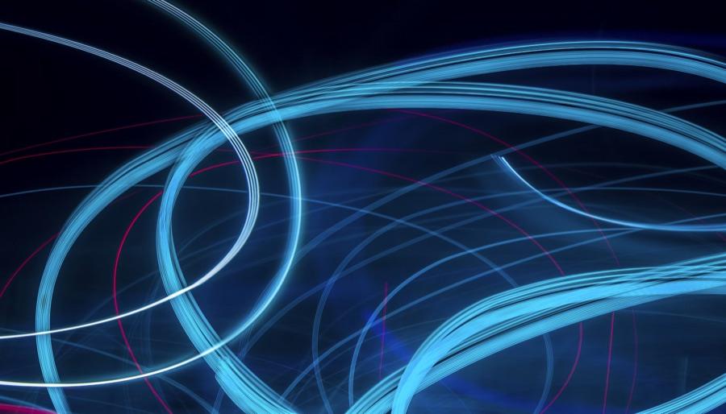
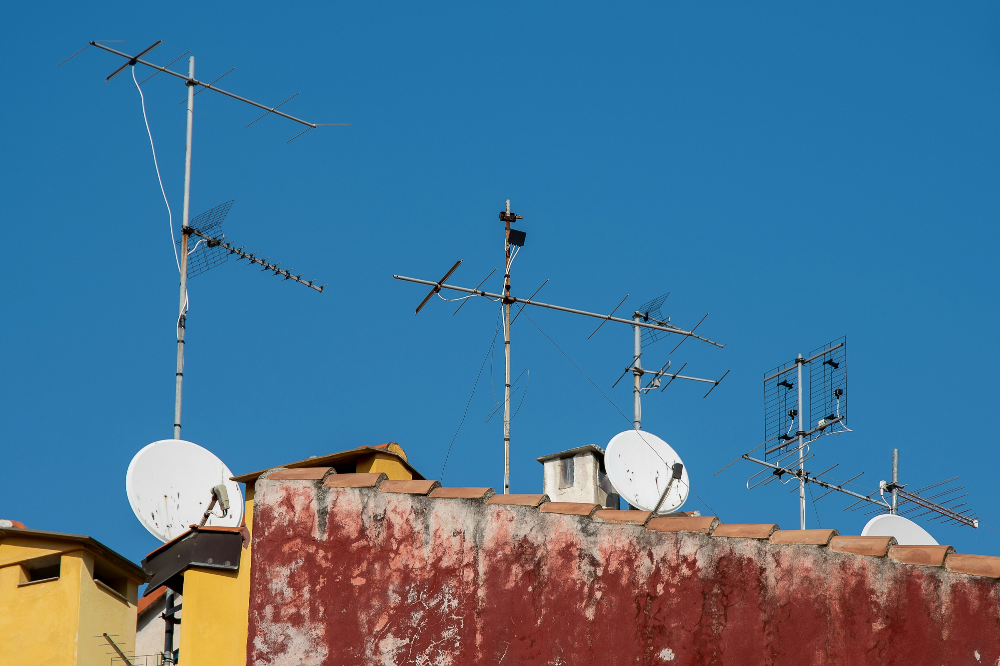
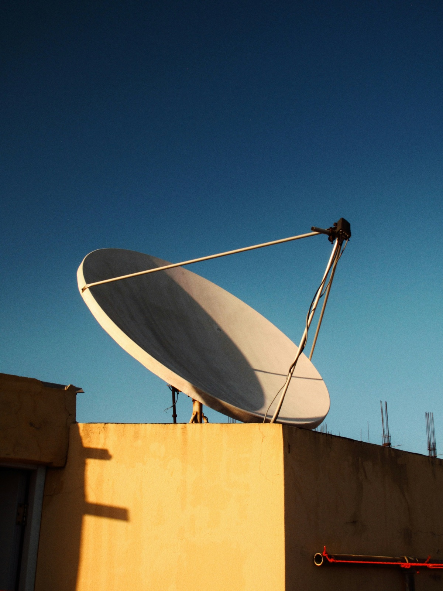
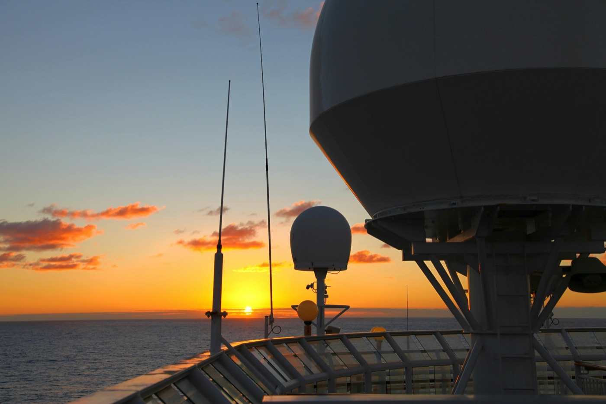
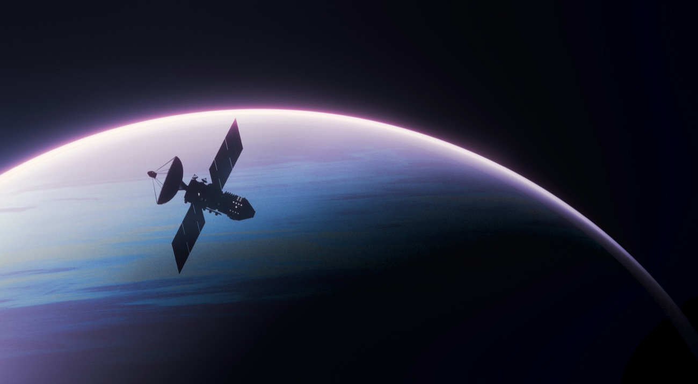
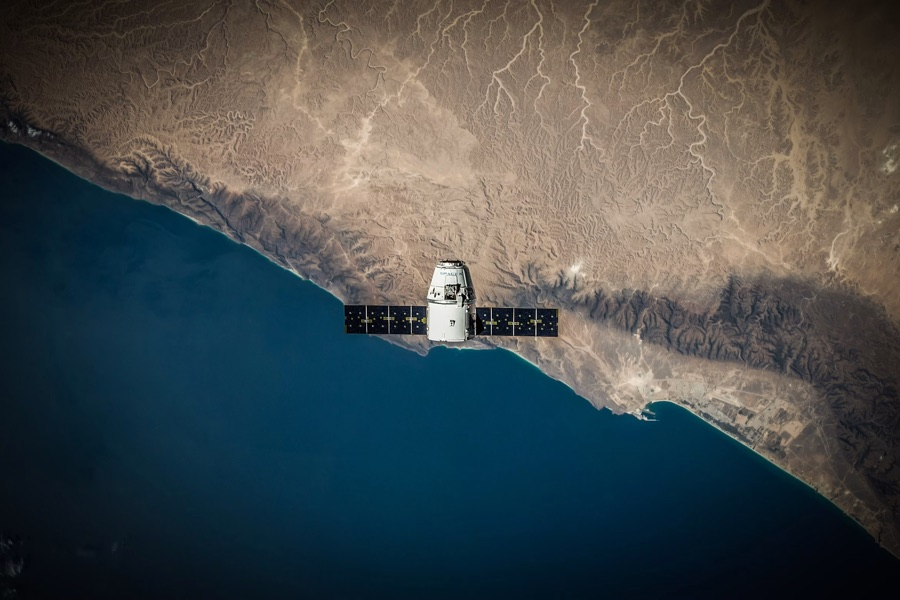
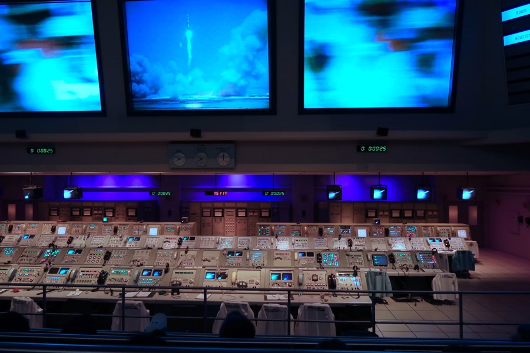
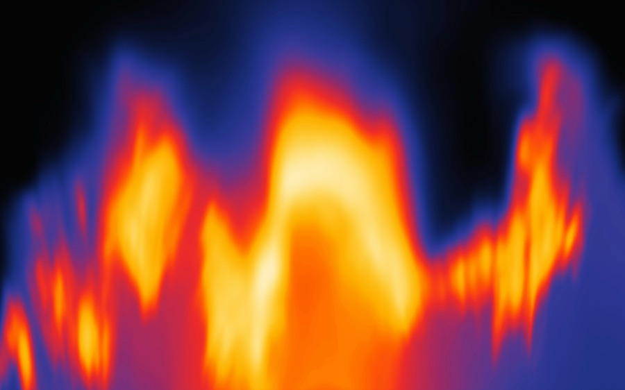

Ku / Ka-band Phased Array
Advanced phased array technologies delivering high-throughput satellite connectivity with rapid beam steering, low-profile architecture, and seamless multi-orbit communication capabilities.

Research and Development
Integrated SATCOM terminals and unmanned platform systems built for reliable connectivity across air, land, sea, and remote mission environments.
Learn More
Integrated Communication
Systems For Unmanned Platforms,
Emergency Response And Global Connectivity.


Company Overview
Focused on satellite communications and intelligent unmanned systems, we develop integrated communication technologies that enable resilient connectivity, rapid deployment, and operational excellence across global mission environments.
Learn MoreGlobal Satellite Connectivity
Supporting GEO, MEO, and LEO satellite networks to provide seamless, resilient, and high-availability communications across global mission environments.

UAV Connectivity Solutions
Providing secure voice, video, and data transmission for unmanned aerial vehicles operating in complex and remote environments.
Learn MoreCritical Response Networks
Rapidly deployable satellite communication systems ensuring reliable connectivity for disaster response, public safety, and mission-critical operations.
Learn MoreTechnology Platform
Built upon satellite communications, phased array systems, intelligent networking, and autonomous platform integration, our technology platform enables secure, scalable, and mission-ready connectivity across complex operational environments.
Learn More
Advanced phased array technologies delivering high-throughput satellite connectivity with rapid beam steering, low-profile architecture, and seamless multi-orbit communication capabilities.

Precision tracking algorithms maintain stable links and fast acquisition across changing orbital, platform, and environmental conditions.

Coordinated servo control enables compact terminals to keep directional accuracy while platforms move through demanding operating profiles.

Multidisciplinary simulation helps balance radio performance, thermal stability, and mechanical reliability before field deployment.